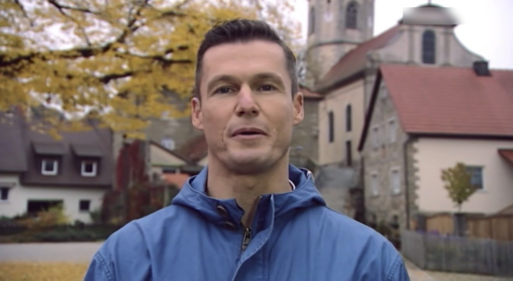
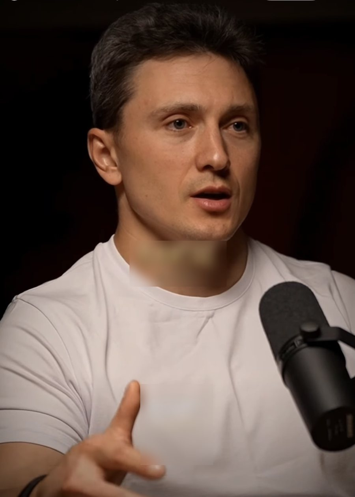

English
English Français
Français Italiano
Italiano العربية
العربية ქართული
ქართული Türkçe
Türkçe Español
EspañolLPAL 4-ის ყველა სპორტსმენისთვის
შენი წარდგენის ვიდეო
კიოლნში შენს გამოსვლამდე დარბაზის დიდ ეკრანზე და KICK-ის პირდაპირ ეთერში გავა მოკლე ფილმი შენზე. მაყურებლების უმეტესობას შენი სახელი არასდროს გაუგია. ფილმის შემდეგ მათ უნდა იცოდნენ, ვინ ხარ, რას აკეთებ და რატომ უნდა გიგულშემატკივრონ.
შენ იღებ, ჩვენ ვამონტაჟებთ. ეს გვერდი ზუსტად გეუბნება, რა გადაიღო და როგორ.
ჩაწერის დაწყებამდე
კამერის პარამეტრები
ეს პარამეტრები ყველა ნაწილისთვის ერთნაირია. ცუდ ხმას ან ვერტიკალურ ვიდეოს მერე ვერ გამოვასწორებთ, ამიტომ ყოველი ჩაწერის წინ შეამოწმე.
iPhone: Settings → Camera → Record Video → 4K, 30 fps. Android: კამერის აპში გახსენი ვიდეოს პარამეტრები და აირჩიე 4K / UHD, 30 fps. ან გამოიყენე კამერა, თუ გაქვს.
ტელეფონზე გამოიყენე უკანა კამერა და ზუმი დააყენე 2×-ზე: კამერის აპში დააჭირე 2×-ს, როგორც სურათზეა. კამერაზე გამოიყენე დაახლოებით 30 მმ ობიექტივი. არანაირი სელფი-კამერა, ფილტრები, სილამაზის რეჟიმი ან მუსიკა.

იმ ნაწილებისთვის, სადაც ლაპარაკობ, ტელეფონი დადე შტატივზე ან მიაყუდე წიგნებს ან თაროს თვალის სიმაღლეზე. ხელში მოკანკალე ინტერვიუ არ გვინდა.
მშვიდი ოთახი. გამორთე ტელევიზორი, მუსიკა, ვენტილატორები და სარეცხი მანქანა. ტელეფონი შენგან მაქსიმუმ 2 მეტრში, ან გამოიყენე საყელო მიკროფონი, თუ გაქვს.
სინათლე გვერდიდან ან წინიდან მოდის (ფანჯარა ან ლამპა). არასდროს დაჯდე ისე, რომ ზურგს უკან ნათელი ფანჯარა იყოს.
დაწყებამდე კამერის ობიექტივი მაისურით გაწმინდე. ჭუჭყიანი ობიექტივი ყველაფერს ბუნდოვანს ხდის.
ეკრანზე დიდხანს დააჭირე შენს სახეს (ან მთავარ ობიექტს), სანამ არ გამოჩნდება AE/AF lock, რომ ლაპარაკისას სურათი არ შეიცვალოს.
ჩაწერის დაწყების შემდეგ დაელოდე 3 წამი, სანამ ლაპარაკს დაიწყებ, და ბოლოშიც 3 წამი. მნიშვნელოვანი წინადადებები 2–3-ჯერ თქვი. მეტი მასალა = უკეთესი მონტაჟი.
საუკეთესოა, თუ მთელი ვიდეო ინგლისურად იქნება. პირველი ნაწილი აუცილებლად ინგლისურად უნდა იყოს. თუ დანარჩენისთვის ინგლისური არ გყოფნის, ილაპარაკე შენს ენაზე, ოღონდ ნელა და გარკვევით, რომ ადვილად ვთარგმნოთ.
Lion Pride-ის მაისური, თუ გაქვს. თუ არა, ჩვეულებრივი მაისური ერთი მუქი ფერის (შავი, მუქი ნაცრისფერი, მუქი ლურჯი). პატარა ლოგო, მაგალითად Nike ან Adidas, ნორმალურია. დიდი ნახატები ან წარწერები არა.
ნაწილი 1 · ინგლისურად
ვინ ხარ
ეს შენი ფილმის დასაწყისია. პირდაპირ კამერის ობიექტივს უყურებ (არა ეკრანს) და ინგლისურად წარადგენ თავს: შენი სახელი, შენი უდიდესი გამარჯვებები მკლავჭიდში და ვის ებრძვი LPAL 4-ზე. ეს ნაწილი ინგლისურად უნდა იყოს, მაშინაც კი, თუ სხვა ნაწილებში შენს ენაზე ლაპარაკობ. ქვემოთ მოცემული ტექსტი ინგლისურად თქვი.
My name is [first and last name]. I'm from [city, country]. I'm [your biggest title, e.g. a multiple-time national champion] in armwrestling, and I'm coming to Cologne, Germany, to compete against [opponent] at LPAL 4.
- დაასახელე შენი საუკეთესო ტიტულები: ეროვნული, ევროპის ან მსოფლიოს ჩემპიონატები, მსოფლიო თასები და დიდი ტურნირები. თუ ამ ტურნირების ვიდეოები არსებობს, ახსენე და ბმულები WhatsApp-ით გამოგვიგზავნე (იხილე ამ გვერდის ბოლო).
- თქვი 4–5-ჯერ: მშვიდად, მერე მეტი ენერგიით. საუკეთესო დუბლს ჩვენ ავარჩევთ.
- ზეპირად ისწავლე, რომ არ წაიკითხო. აქცენტი სულაც არ არის პრობლემა.

სივრცე თავს ზემოთ კადრის ქვედა კიდე: მკერდი✓ თვალები პირდაპირ ობიექტივში
ნაწილი 2 · ინტერვიუ
შენი ისტორია
ეს ფილმის გულია. წარმოიდგინე, რომ არავინ იცის, ვინ ხარ. მოჰყევი შენი ისტორია: საიდან ხარ, რას აკეთებ ყოველდღე და როგორ გახდი მკლავჭიდელი. ვიღაც (მეგობარი, შენი პარტნიორი, ოჯახის წევრი) ზის კამერის გვერდით და შეკითხვებს გისვამს. შენ იმ ადამიანს უყურებ, არა ობიექტივს.

✓ თვალები ინტერვიუერზე
✗ არა ტელეფონში / კამერაში
ეს მაგალითი ვერტიკალური ვიდეოა. შენ იგივე კადრი ჰორიზონტალურად გადაიღე (16:9).
როგორ მივიღოთ შავი ფონი
- გადაიღე საღამოს, ან ფარდები ჩამოაფარე.
- ჭერის სინათლე გამორთე. გამოიყენე ერთი ლამპა ან ფანჯარა მხოლოდ ერთ მხარეს.
- კედლიდან შორს დაჯექი (1,5 მეტრი ან მეტი), რომ ფონი სიბნელეში დარჩეს.
- ჩაიცვი ერთი მუქი ფერის მაისური (იხილე „რა ჩაიცვა“ ზემოთ).
შეკითხვები
ინტერვიუერი ხმამაღლა კითხულობს. უპასუხე სრული წინადადებებით, რომლებიც შეკითხვის გარეშეც გასაგებია („ვმუშაობ დურგლად …-ში“, და არა მხოლოდ „დურგალი.“). საუკეთესოა ინგლისურად; თუ არ შეგიძლია, ილაპარაკე შენს ენაზე ნელა და გარკვევით. ნუ იჩქარებ; 10–15 წუთი ლაპარაკი იდეალურია.
- ვინ ხარ? საიდან ხარ და სად ცხოვრობ ახლა?
- რას საქმიანობ ან სად სწავლობ? ზუსტად როგორია შენი სამუშაო?
- აღწერე შენი ერთი ჩვეულებრივი დღე, გაღვიძებიდან დაძინებამდე.
- როგორ და როდის დაიწყე მკლავჭიდი? ვინ მოგიყვანა ამ სპორტში?
- რა არის შენი უდიდესი გამარჯვებები? დაასახელე ტურნირი და წელი (კადრებს ჩვენ მოვძებნით).
- რა იყო შენი ყველაზე მძიმე მარცხი ან ყველაზე რთული მომენტი და რა ისწავლე მისგან?
- რას ვერასდროს გამოიცნობდნენ შენზე ადამიანები? ოჯახი, შვილები, შინაური ცხოველები, სხვა სპორტი, ჰობი, სასაცილო ისტორია.
- რას ნიშნავს შენთვის მკლავჭიდი? რატომ აკეთებ ამას?
ნაწილი 3 · ლაპარაკი არ არის საჭირო
შენი დღე
სანამ შენს ისტორიას ყვები, ჩვენ შენს ცხოვრებას ვაჩვენებთ. სთხოვე მეგობარს ან კოლეგას, გადაგიღოს ჩვეულებრივი დღის განმავლობაში: სამსახურში ან სკოლაში, გზაში, სახლში. კამერას ნუ უყურებ, უბრალოდ აკეთე ის, რასაც ყოველთვის აკეთებ.
- თითოეული კლიპი 10–30 წამი, კამერა უძრავად ან ნელა მოძრაობს. ყველაფერი 2–3 სხვადასხვა კუთხიდან გადაიღე.
- სამსახურიდან ან სკოლიდან მინიმუმ 5–10 კლიპი. თუ სამსახურში ვერ იღებ, გადაიღე შენობა გარედან, სამუშაო ტანსაცმელი, ხელსაწყოები, გზა იქამდე.
- სახლი და თავისუფალი დროც: საჭმლის მომზადება, შვილები, ცხოველები, სხვა სპორტი, შენი მანქანა, ყველაფერი, რაც „შენ“ ხარ.
ნაწილი 4 · დარბაზში
ვარჯიში
აჩვენე, რამდენად შრომობ. გადაიღე მკლავჭიდის 3–4 შენი ტიპური სავარჯიშო და სპარინგი მაგიდასთან შენს ვარჯიშის პარტნიორებთან. თითოეული სავარჯიშო რამდენიმე კუთხიდან: ზოგი ძალიან ახლოდან, ზოგი შორიდან.
მაგალითები LPAL-ის ღონისძიებებიდან. დარბაზში ზუსტად ასევე.
- თითოეული სავარჯიშო: 1 ახლო, 1 საშუალო, 1 საერთო კლიპი. კლიპები 10–30 წამი.
- სპარინგი: გადაიღე მაგიდის გვერდიდან, შენი მეტოქის ზურგს უკნიდან (შენი სახე კამერისკენ) და ხელებზე ძალიან ახლოდან.
- დამატებით: ცარცის წასმა, ბინტები/ღვედები, დარბაზში შესვლა, ყვირილი მძიმე სეტის შემდეგ. ნამდვილი ხმები მისასალმებელია.
- ტელეფონი ჰორიზონტალურად, შტატივზე ან ორივე ხელით მყარად დაჭერილი. დარბაზში ბევრი სინათლე გვეხმარება.
ნაწილი 5 · იგივე მოწყობა, რაც ნაწილ 2-ში
მატჩი
ახლა ილაპარაკე შენს მატჩზე LPAL 4-ზე. იყავი თავდაჯერებული და იყავი საკუთარი თავი. პატივისცემა კარგია, ცოტა trash talk-იც შეიძლება, მაგრამ შეურაცხყოფა ოჯახზე, ქვეყანაზე ან რელიგიაზე არა.
შეკითხვები
- ვინ არის შენი მეტოქე LPAL 4-ზე და რა იცი მასზე?
- რაში არის შენი მეტოქე ძლიერი? სად არის სუსტი?
- როგორ მოიგებ ამ მატჩს? (საიდუმლოებები არ გვჭირდება, მხოლოდ შენი შეგრძნება.)
- როგორ ემზადები ამ მატჩისთვის?
- რას ნიშნავს შენთვის დიდ სცენაზე ბრძოლა კიოლნში, KICK-ის პირდაპირ ეთერში?
შემდეგ შეხედე ობიექტივს და დაასრულე ერთი ძლიერი წინადადებით. რამდენიმე იდეა, თქვი შენი სიტყვებით:
„[მეტოქე], პატივს გცემ, მაგრამ 9 იანვარს კიოლნში გამარჯვება ჩემთან დარჩება.“
„ამდენი იმისთვის არ მივარჯიშია, რომ წავაგო. მაგიდასთან შევხვდებით კიოლნში.“
„[მეტოქე], მოემზადე შენი ცხოვრების ყველაზე რთული მატჩისთვის.“
„[მეტოქე], იგრძნობ ძალას, რომელიც აქამდე არასდროს გიგრძნია.“
„[მეტოქე], როცა ჩემს ზურგს უკან [შენი ქვეყანა] დგას, ვერავინ შემაჩერებს. მოემზადე წასაგებად.“
ნაწილი 6 · შენზე სხვა ლაპარაკობს
შენი ვარჯიშის პარტნიორი
აირჩიე ერთი ვარჯიშის პარტნიორი (ან შენი მწვრთნელი), რომელიც კარგად გიცნობს. ის შენზე ლაპარაკობს: რამდენად მძიმედ ვარჯიშობ, რამდენი ხანია ერთმანეთს იცნობთ და რატომ მოიგებ. სანამ ის ლაპარაკობს, ჩვენ შენს ვარჯიშისა და მატჩების კადრებს ვაჩვენებთ.
მე მქვია [სახელი], [სპორტსმენის] ვარჯიშის პარტნიორი ვარ. ერთმანეთს [რიცხვი] წელია ვიცნობთ და ერთად ვვარჯიშობთ [რამდენად ხშირად].
შემდეგ ის პასუხობს
- რამდენად მძიმედ ვარჯიშობს [სპორტსმენი]? მოჰყევი ერთი ისტორია ვარჯიშიდან.
- რა ხდის მას საშიშს მაგიდასთან?
- როგორია ის დარბაზს გარეთ?
- რატომ დაამარცხებს ის [მეტოქეს] კიოლნში?
როგორ გადავიღოთ
- როგორც ნაწილ 2-ში: პარტნიორი უყურებს შეკითხვების დამსმელს კამერის გვერდით, არა ობიექტივს.
- გადაიღე დარბაზში (ფონზე მაგიდა ან ჰანტელები მშვენიერია), ან სახლში მუქი ფონით.
- მშვიდი მომენტი: ჩაწერისას დარბაზში მუსიკა არ უნდა იყოს.
- ტელეფონი ჰორიზონტალურად, შტატივზე, 2× ობიექტივი, დაახლოებით 1,5–2 მეტრში.
დამატებით · რაც უკვე გაქვს
შენი არქივი
ძველი მასალა ისტორიას რეალურს ხდის. გამოგვიგზავნე ყველაფერი, რაც გაქვს:
- შენი ყველაზე დიდი მატჩებისა და ტურნირების ვიდეოები: ფაილები შენს საქაღალდეში ატვირთე. YouTube-ისა და Instagram-ის ბმულები: გამოგვიგზავნე WhatsApp-ით (იხილე ამ გვერდის ბოლო).
- ფოტოები მედლებით, თასებით, ქამრებით, კვარცხლბეკზე.
- ბავშვობის ფოტოები, შენი პირველი ტურნირი, ძველი ვარჯიშის ფოტოები.
- ფოტოები სამსახურიდან ან სკოლიდან, თუ იქ ვერ გადაიღე.
საკონტროლო სია
ატვირთვამდე
მონიშნე, რაც გაქვს. ეს სია მხოლოდ შენს ტელეფონში ინახება.
ატვირთვა
გამოგვიგზავნე შენი ვიდეოები
ბოლო ვადა: კვირა, 6 დეკემბერი 2026
Part1_Intro_take2.mov, Part4_Training_sparring.mp4.გახსენი საქაღალდე შენი სახელით.
ძალიან მნიშვნელოვანი
შენი მატჩების ბმულები WhatsApp-ით
გამოგვიგზავნე შენი მატჩების ყველა YouTube და Instagram ბმული WhatsApp-ით. ყველა ვიდეო მნიშვნელოვანია.
- გრძელი პირდაპირი ეთერი, მაგალითად მსოფლიოს ან ევროპის ჩემპიონატიდან? დაწერე ზუსტი დრო, როცა გამოდიხარ, მაგ.
European Championship 2025 – 3:42:10. - ნუ ჩაიწერ ეკრანს ტელეფონზე ვიდეოების გასაგზავნად. ხარისხი იკარგება. გამოგვიგზავნე ბმული.
საკონტროლო სიაში „ბმულები“ მონიშნე მხოლოდ მათი გაგზავნის შემდეგ.
კითხვები? მოგვწერე WhatsApp-ზე ან business@lionpride-armwrestling.com-ზე.